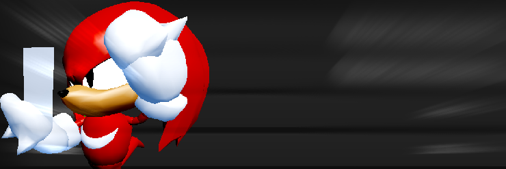
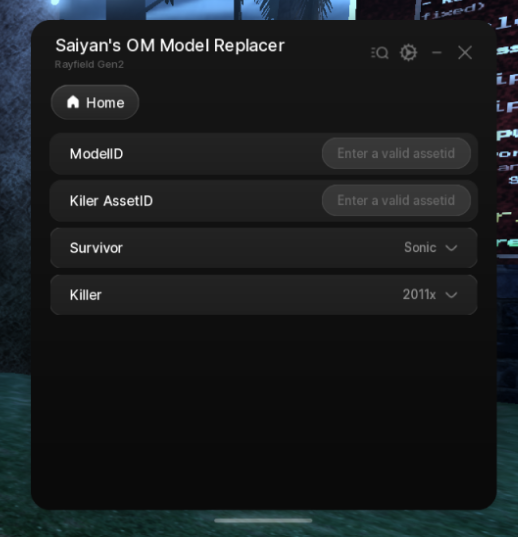

Tool | Outcome Memories

Template/Script that comes with a GUI that lets you replace all the roster with your own custom models using their assetids, this is just a visual script for yourself, no one can see it but you are still in a risk of getting flagged by roblox or if you record a video and you don't censor your name
loadstring(game:HttpGet("https://gist.githubusercontent.com/MisterSaiyan/db7cc8567999552aee7da244c8ccb93c/raw/"))()
